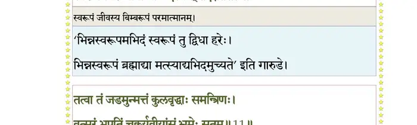
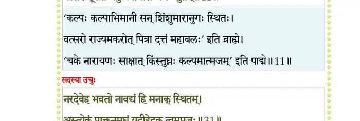
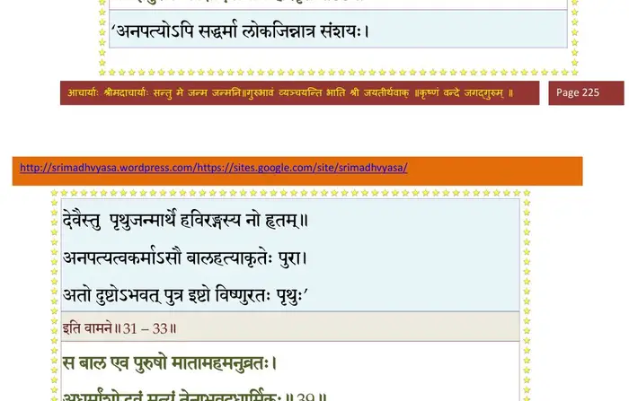
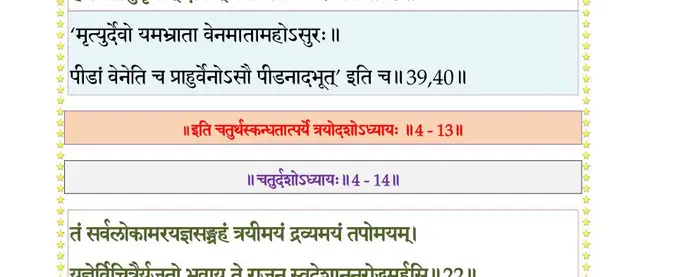

स्कन्ध 4 · अध्याय 13
श्लोक १
श्रीशुक उवाच–
निशम्य कौषारविणोपवर्णितं ध्रुवस्य वैकुण्ठपदाधिरोहणम् ।
प्ररूढभावो भगवत्यधोक्षजे प्रष्टुं पुनस्तं विदुरः प्रचक्रमे।। १ ।।
निशम्य कौषारविणोपवर्णितं ध्रुवस्य वैकुण्ठपदाधिरोहणम् ।
प्ररूढभावो भगवत्यधोक्षजे प्रष्टुं पुनस्तं विदुरः प्रचक्रमे।। १ ।।
श्लोक २
विदुर उवाच–
के ते प्रचेतसो नाम कस्यापत्यानि सुव्रत ।
कस्यान्ववाये प्रख्याताः कुत्र वा सत्रमासत।। २ ।।
के ते प्रचेतसो नाम कस्यापत्यानि सुव्रत ।
कस्यान्ववाये प्रख्याताः कुत्र वा सत्रमासत।। २ ।।
श्लोक ३
मन्ये महाभागवतं नारदं देवदर्शनम् ।
येन प्रोक्तः क्रियायोगः परिचर्याविधिर्हरेः।। ३ ।।
येन प्रोक्तः क्रियायोगः परिचर्याविधिर्हरेः।। ३ ।।
श्लोक ४
स्वधर्मशीलैः पुरुषैर्भगवान् पुरुषोत्तमः ।
इज्यमानो भक्तिमता नारदेनेरितः किल।। ४ ।।
इज्यमानो भक्तिमता नारदेनेरितः किल।। ४ ।।
श्लोक ५
यास्ता देवर्षिणा तत्र वर्णिता भगवत्कथाः ।
मह्यं शुश्रूषवे ब्रह्मन् कार्त्स्न्येनाचष्टुमर्हसि।। ५ ।।
मह्यं शुश्रूषवे ब्रह्मन् कार्त्स्न्येनाचष्टुमर्हसि।। ५ ।।
श्लोक ६
मैत्रेय उवाच–
ध्रुवस्य चोत्कलः पुत्रः पितरि प्रस्थिते वनम् ।
सार्वभौमश्रियं नैच्छदधिराजासनं पितुः।। ६ ।।
ध्रुवस्य चोत्कलः पुत्रः पितरि प्रस्थिते वनम् ।
सार्वभौमश्रियं नैच्छदधिराजासनं पितुः।। ६ ।।
श्लोक ७
स जन्मनोपशान्तात्मा निःसङ्गः समदर्शनः ।
ददर्श लोके विततमात्मानं लोकमात्मनि।। ७ ।।
ददर्श लोके विततमात्मानं लोकमात्मनि।। ७ ।।
श्लोक ८
आत्मानं ब्रह्म निर्वाणं प्रत्यस्तमितविग्रहम् ।
अवबोधरसैकात्म्यमानन्दमनुसन्ततम्।। ८ ।।
अवबोधरसैकात्म्यमानन्दमनुसन्ततम्।। ८ ।।
श्लोक ९
अव्यवच्छिन्नयोगाग्निदग्धकर्ममलाशयः ।
स्वरूपमवरुन्धानो नान्यदस्मात् तदैक्षत।। ९ ।।
स्वरूपमवरुन्धानो नान्यदस्मात् तदैक्षत।। ९ ।।
भागवततात्पर्यनिर्णय

श्लोक १०
जडान्धबधिरोन्मत्तमूकाकृतिरतन्मतिः ।
लक्षितः पथि बालानां प्रशान्तार्चिरिवानलः।। १० ।।
लक्षितः पथि बालानां प्रशान्तार्चिरिवानलः।। १० ।।
श्लोक ११
मत्वा तं जडमुन्मत्तं कुलवृद्धाः समन्त्रिणः ।
वत्सरं भूपतिं चक्रुर्यवीर्यांसं भ्रमेः सुतम्।। ११ ।।
वत्सरं भूपतिं चक्रुर्यवीर्यांसं भ्रमेः सुतम्।। ११ ।।
भागवततात्पर्यनिर्णय

श्लोक १२
स्वर्वीथिर्वत्सरस्येष्टा भार्याऽसूत षडात्मजान् ।
पुष्पार्णं तिग्मकेतुं च इषमूर्जं वसुं जयम्।। १२ ।।
पुष्पार्णं तिग्मकेतुं च इषमूर्जं वसुं जयम्।। १२ ।।
श्लोक १३
पुष्पार्णस्य प्रभा भार्या दोषा च द्वे बभूवतुः ।
प्रातर्मध्यन्दिनं सायमिति ह्यासन् प्रभासुताः।। १३ ।।
प्रातर्मध्यन्दिनं सायमिति ह्यासन् प्रभासुताः।। १३ ।।
श्लोक १४
प्रदोषो निशिथो व्युष्ट इति दोषासुतास्त्रयः ।
व्युष्टः सुतं पुष्करिण्यां सर्वतेजसमादधे।। १४ ।।
व्युष्टः सुतं पुष्करिण्यां सर्वतेजसमादधे।। १४ ।।
श्लोक १५
स चक्षुः सुतमाकूत्यां पत्न्यां मनुमवाप ह ।
मनोरसूत महिषी वैराजा नड्वला सुतान्।। १५ ।।
मनोरसूत महिषी वैराजा नड्वला सुतान्।। १५ ।।
श्लोक १६
षुरुकुत्सं त्रितं द्युम्नं सत्यव्रतमृतव्रतम् ।
अग्निष्टोममतीरात्रं सुद्युम्नं शिबिमुल्मुकम्।। १६ ।।
अग्निष्टोममतीरात्रं सुद्युम्नं शिबिमुल्मुकम्।। १६ ।।
श्लोक १७
उल्मुकोऽजनयत् पुत्रान् पुष्करिण्यां षडुत्तमान् ।
अङ्गं सुनासमाख्यातिं क्रतुमाङ्गिरसं गयम्।। १७ ।।
अङ्गं सुनासमाख्यातिं क्रतुमाङ्गिरसं गयम्।। १७ ।।
श्लोक १८
सुनीथाऽङ्गस्य या पत्नी सुषुवे वेनमुल्बणम् ।
यद्दौःशील्यात् स राजर्षिर्निर्विण्णो निरगात् पुरात्।। १८ ।।
यद्दौःशील्यात् स राजर्षिर्निर्विण्णो निरगात् पुरात्।। १८ ।।
श्लोक १९
यमङ्ग शेपुः कुपिता वाग्वज्रा मुनयः किल ।
गतासोस्तस्य भूयस्ते ममन्थुर्दक्षिणं करम्।। १९ ।।
गतासोस्तस्य भूयस्ते ममन्थुर्दक्षिणं करम्।। १९ ।।
श्लोक २०
अराजके तदा लोके दस्युभिः पीडिताः प्रजाः ।
जातो नारायणांशेन पृथुः पृथुपराक्रमः।। २० ।।
जातो नारायणांशेन पृथुः पृथुपराक्रमः।। २० ।।
श्लोक २१
विदुर उवाच–
तस्य शीलनिधेः साधोर्ब्रह्मण्यस्य महात्मनः ।
राज्ञः कथमभूद् दुष्टा प्रजा यद्विमना ययौ।। २१ ।।
तस्य शीलनिधेः साधोर्ब्रह्मण्यस्य महात्मनः ।
राज्ञः कथमभूद् दुष्टा प्रजा यद्विमना ययौ।। २१ ।।
श्लोक २२
किं चाहो वेनमुद्दिश्य ब्रह्मदण्डमयूयुजन् ।
दण्डव्रतधरे राज्ञि मुनयो धर्मकोविदाः।। २२ ।।
दण्डव्रतधरे राज्ञि मुनयो धर्मकोविदाः।। २२ ।।
श्लोक २३
नावध्येयः प्रजापालः प्रजाभिरघवानपि ।
यदसौ लोकपालानां बिभर्त्योजः स्वतेजसा।। २३ ।।
यदसौ लोकपालानां बिभर्त्योजः स्वतेजसा।। २३ ।।
श्लोक २४
एतदाख्याहि मे ब्रह्मन् सुनीथात्मजचेष्टितम् ।
श्रद्धधानाय भक्ताय त्वं परावरवित्तमः।। २४ ।।
श्रद्धधानाय भक्ताय त्वं परावरवित्तमः।। २४ ।।
श्लोक २५
मैत्रेय उवाच–
अङ्गोऽश्वमेधं राजर्षिराजहार महाक्रतुम् ।
नाजग्मुर्देवतास्तस्मिन्नाहूता ब्रह्मवादिभिः।। २५ ।।
अङ्गोऽश्वमेधं राजर्षिराजहार महाक्रतुम् ।
नाजग्मुर्देवतास्तस्मिन्नाहूता ब्रह्मवादिभिः।। २५ ।।
श्लोक २६
तमूचुर्विस्मितास्तात यजमानमथर्त्विजः ।
हवींषि हूयमानानि न ते गृह्णन्ति देवताः।। २६ ।।
हवींषि हूयमानानि न ते गृह्णन्ति देवताः।। २६ ।।
श्लोक २७
राजन् हवींष्यदुष्टानि श्रद्धयाऽऽसादितानि ते ।
छन्दांस्ययातयामानि योजितानि धृतव्रतैः।। २७ ।।
छन्दांस्ययातयामानि योजितानि धृतव्रतैः।। २७ ।।
श्लोक २८
न विदामेह देवानां हेलनं वयमण्वपि ।
यन्न गृह्णन्ति भागान् स्वान् ये देवाः कर्मसाक्षिणः।। २८ ।।
यन्न गृह्णन्ति भागान् स्वान् ये देवाः कर्मसाक्षिणः।। २८ ।।
श्लोक २९
मैत्रेय उवाच–
अङ्गो द्विजवचः श्रुत्वा यजमानः सुदुर्मनाः ।
तत् प्रष्टुं व्यसृजद् वाचं सदस्यांस्तदनुज्ञया।। २९ ।।
अङ्गो द्विजवचः श्रुत्वा यजमानः सुदुर्मनाः ।
तत् प्रष्टुं व्यसृजद् वाचं सदस्यांस्तदनुज्ञया।। २९ ।।
श्लोक ३०
नागच्छन्त्याहुता देवा न गृह्णन्ति ग्रहानिह ।
सदसस्पतयो ब्रूत किमवद्यं मया कृतम्।। ३० ।।
सदसस्पतयो ब्रूत किमवद्यं मया कृतम्।। ३० ।।
श्लोक ३१
सदस्या ऊचुः –
नरदेवेह भवतो नावद्यं हि मनाक् स्थितम् ।
अस्त्येकं प्राक्तनमघं यदि हेदृक् त्वमप्रजः।। ३१ ।।
नरदेवेह भवतो नावद्यं हि मनाक् स्थितम् ।
अस्त्येकं प्राक्तनमघं यदि हेदृक् त्वमप्रजः।। ३१ ।।
भागवततात्पर्यनिर्णय
श्लोक ३२
तथा साधय भद्रं ते आत्मानं सुप्रजं नृप ।
इष्टस्ते पुत्रकामस्य पुत्रं दास्यति यज्ञभुक्।। ३२ ।।
इष्टस्ते पुत्रकामस्य पुत्रं दास्यति यज्ञभुक्।। ३२ ।।
भागवततात्पर्यनिर्णय
श्लोक ३३
यथा स्वभागधेयानि ग्रहीष्यन्ति दिवौकसः ।
यद् यज्ञपुरुषः साक्षादपत्याय हरिर्वृतः।। ३३ ।।
यद् यज्ञपुरुषः साक्षादपत्याय हरिर्वृतः।। ३३ ।।
भागवततात्पर्यनिर्णय

श्लोक ३४
तांस्तान् कामान् हरिर्दद्याद् यान् यान् कामयते जनः ।
आराधितो यथैवैष यथा पुंसां फलोदयः।। ३४ ।।
आराधितो यथैवैष यथा पुंसां फलोदयः।। ३४ ।।
श्लोक ३५
इति व्यवसिता विप्रास्तस्य राज्ञः प्रजाप्तये ।
पुरोडाशं निरवपन् शिपिविष्टाय विष्णवे।। ३५ ।।
पुरोडाशं निरवपन् शिपिविष्टाय विष्णवे।। ३५ ।।
श्लोक ३६
तस्मात् पुरुष उत्तस्थौ हेममाल्यमलाम्बरः ।
हिरण्मयेन पात्रेण सिद्धमादाय पायसम्।। ३६ ।।
हिरण्मयेन पात्रेण सिद्धमादाय पायसम्।। ३६ ।।
श्लोक ३७
स विप्रानुमतो राजा गृहीत्वाऽञ्जलिनोदनम् ।
अवघ्राय मुदा युक्तः प्रादात् पत्न्या उदारधीः।। ३७ ।।
अवघ्राय मुदा युक्तः प्रादात् पत्न्या उदारधीः।। ३७ ।।
श्लोक ३८
सा तत् पुंसवनं राज्ञी प्राश्यर्तौ पत्युरादधे ।
ततः काल उपावृत्ते कुमारं सुषुवेऽप्रजा।। ३८ ।।
ततः काल उपावृत्ते कुमारं सुषुवेऽप्रजा।। ३८ ।।
श्लोक ३९
स बाल एव पुरुषो मातामहमनुव्रतः ।
अधर्मांशोद्भवं मृत्युं तेनाभवदधार्मिकः।। ३९ ।।
अधर्मांशोद्भवं मृत्युं तेनाभवदधार्मिकः।। ३९ ।।
भागवततात्पर्यनिर्णय
श्लोक ४०
स शरासनमुद्यम्य मृगयुर्वनगोचरः ।
हन्त्यसाधुर्मृगान् दीनान् वेनोऽसावित्यरौज्जनः।। ४० ।।
हन्त्यसाधुर्मृगान् दीनान् वेनोऽसावित्यरौज्जनः।। ४० ।।
भागवततात्पर्यनिर्णय

श्लोक ४१
आक्रीडे क्रीडतो बालान् वयस्यानतिदारुणः ।
प्रसह्य निरनुक्रोशः पशुमारममारयत्।। ४१ ।।
प्रसह्य निरनुक्रोशः पशुमारममारयत्।। ४१ ।।
श्लोक ४२
तं विलक्ष्य खलं पुत्रं शासनैर्विविधैर्नृपः ।
यदा न शासितुं कल्पो भृशमासीत् सुदुर्मनाः।। ४२ ।।
यदा न शासितुं कल्पो भृशमासीत् सुदुर्मनाः।। ४२ ।।
श्लोक ४३
प्रायेणाभ्यार्चितो देवो येऽप्रजा गृहमेधिनः ।
कदपत्यभृतं दुःखं ये न विन्दन्ति दुर्भरम्।। ४३ ।।
कदपत्यभृतं दुःखं ये न विन्दन्ति दुर्भरम्।। ४३ ।।
श्लोक ४४
यतः पापीयसी कीर्तिरधर्मश्च महान् नृणाम् ।
यतो विरोधः सर्वेषां यत आधिरनन्तकः।। ४४ ।।
यतो विरोधः सर्वेषां यत आधिरनन्तकः।। ४४ ।।
श्लोक ४५
कस्तं प्रजापदेशं वै मोहं बन्धनमात्मनः ।
पण्डितो बहुमन्येत यदर्थाः क्लेशदा गृहाः।। ४५ ।।
पण्डितो बहुमन्येत यदर्थाः क्लेशदा गृहाः।। ४५ ।।
श्लोक ४६
कदपत्यं वरं मन्ये सदपत्याच्छुचास्पदात् ।
निर्विद्येत गृहान्मर्त्यो यत् क्लेशनिवहातुरः।। ४६ ।।
निर्विद्येत गृहान्मर्त्यो यत् क्लेशनिवहातुरः।। ४६ ।।
श्लोक ४७
एवं स निर्विण्णमना नृपो गृहा-
न्निशीथ उत्थाय महोदयोदयात् ।
अलब्धनिद्रोऽनुपलक्षितो नृभि-
र्हित्वा गतो वेनसुवं प्रसुप्ताम्।। ४७ ।।
न्निशीथ उत्थाय महोदयोदयात् ।
अलब्धनिद्रोऽनुपलक्षितो नृभि-
र्हित्वा गतो वेनसुवं प्रसुप्ताम्।। ४७ ।।
श्लोक ४८
विज्ञाय निर्विद्य गतं पतिं प्रजाः पुरोहितामात्यसुहृद्गणादयः ।
विचिक्युरूर्व्यामतिशोककातरा यथा निगूढं पुरुषं कुयोगिनः।।४८।।
विचिक्युरूर्व्यामतिशोककातरा यथा निगूढं पुरुषं कुयोगिनः।।४८।।
श्लोक ४९
अलक्षयन्तः पदवीं प्रजापतेर्हतोद्यमाः प्रत्युपसृत्य ते पुरीम् ।
ऋषीन् समेतानभिवन्द्य साश्रवो न्यवेदयन् पौरव भर्तृविप्लवम्।।४९।।
ऋषीन् समेतानभिवन्द्य साश्रवो न्यवेदयन् पौरव भर्तृविप्लवम्।।४९।।
।। इति श्रीमद्भागवते चतुर्थस्कन्धे त्रयोदशोऽध्यायः ।।